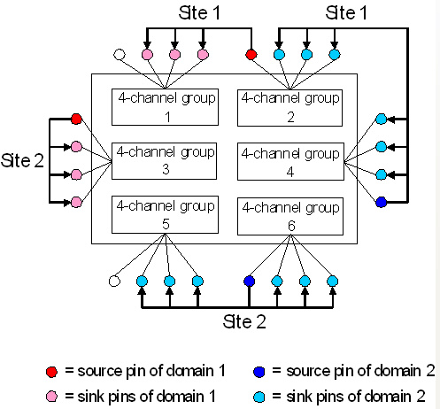

Implementation details of clock forwarding
Clock forwarding is one-many, that is, the adjustment information of one source pin can be passed to several sink pins.
A source pin together with its associated sink pins is called a forwarding domain. Several domains can be active at the same time. The set of domains that are to be active at the same time is defined in a forwarding set (with the CFDF and CFCF commands, or with the CLOCKFORWARDING_DOMAIN and CLOCKFORWARDING_SET APIs).
There are a number of restrictions to be observed when using the clock forwarding feature:
- For the PS1600 digital card:
The PS1600 can pass the clock phase information only to slaves within the same logical boards. A PS1600 card combines 8 channel modules or 8 logical boards. Each logical boards represents one pogo block, when using the standard (compatible) 8x16 pogo assembly. When using the high-density 4x32 pogo assembly, it represents either the inner rows of each pogo block, for example 101, or the outer pin rows, for example 501.
- The domains of a forwarding set must be separate, that is, no pin must belong to more than one of them.
- If the pins of one forwarding domain belong to different ports, all these ports must belong
to the same sequencing group and must have the same tester cycle length.
For more information on sequencing groups see Synchronization within sequencing groups.
- All pins of one forwarding domain must run with the same x-mode (all with x4-mode or all with x6-mode).
- 24 consecutive received bits must not be longer than 24 1/4 UIs, and not shorter than 23 3/4
UIs of the programmed UI length.
This requirement sharpens one of the restrictions listed in Drift and transition tracking.
If too many adjustments are made on the source pin in too short a time, the tracking information cannot be forwarded fast enough to the sink pins any more. This may compromise the clock forwarding fatally. You can guard against this problem in two steps:
- Check with the CFCF command (or the speed() function of
the CLOCKFORWARDING_DOMAIN API) whether the transfer rate you need is
supported by the hardware under the actual boundary conditions (for example, the master clock
period).
This is done as follows:
- Specify the required maximum transfer rate.
- Execute your functional test.
If the requested transfer rate is too high, execution of the functional test will be aborted and an error message be issued which informs you about the maximum speed that is supported by the hardware under the current boundary conditions. The functional test must be started in order that SmarTest can determine these current boundary conditions.
- If it is too high, try to distribute the forwarding domains on the channel boards in such a way that the transfer can be executed in parallel for all domains.
Example

This example shows an optimal distribution of two forwarding domains for two sites.
Functional changes
- Introduced in SmarTest 7.0.1